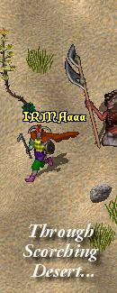
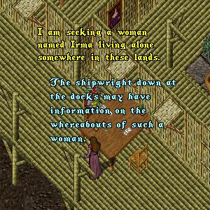
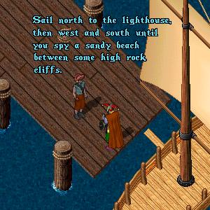
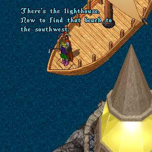
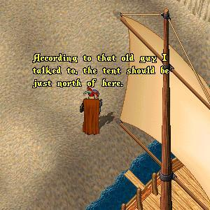
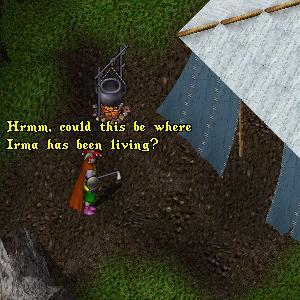

My Dearest Brother, I have decided that the time has come to put the past behind me and leave this place. Britannia has just too many dark shadows of a life filled with sorrow and misfortune (mine). There was a time when I thought that my future was full of promise. The first time my eyes met ImaNewbie's I was sure that he was my one true love and that we would spend the rest of eternity together, but then his true character emerged and I saw him for the filandering womanizer that he really was. My brief affair with that scoundrel Lance Sterling was another disaster. Even when I decided to give up on men forever and joined the Sisterhood, little did I realize it would turn out to be little more than a cult. So, I have come to accept the fact that it is my fate to spend the rest of my days alone. I will be leaving Britannia for the Lost Lands of the Second Age, never to return to this accursed place. Please keep this secret between us and think of me from time to time. Farewell Brother, Be Well, IrmaDufus |
Determined to be once again re-united with
his lost love, ImaNewbie sets out for the
Lost Lands and begins his search:

|
Exhausted from his searching ImaNewbie
stops for a meal and a rest at the Inn in
Papua where a helpful serving girl steers
him towards someone who may be of help.
 |
Sure enough, the shipwright has indeed
heard of a reclusive woman living by
herself in a tent just up from a beach
and offers ImaNewbie directions.
 |
Hardly able to contain his excitement,
ImaNewbie charters a vessel and begins
what he hopes will be a journey to a
reunion with his beloved Irma.
 |
Sailing west and south ImaNewbie spots a long
stretch of sandy beach surrounded on both sides
by high rocky cliffs. He brings his boat into
shore and disembarks to investigate.
 |
Heading up from the beach ImaNewbie begins
to follow a well-trodden path north into the
woods until he comes upon a clearing.
 |
To Be Continued...